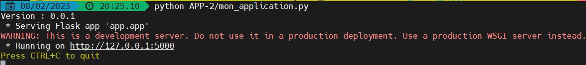
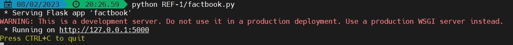

osNote préalable: quel que soit le type de rendu, ce qui m'intéresse est le code que vous avez écrit, et non ce qui s'affiche à votre écran. A partir de ce que vous m'envoyez (fichier, application zipée, dépôt), je le rejouerai de mon côté si besoin pour voir le résultat. N'oubliez pas de commenter votre code.
Pour la donnée suivante représentant une personne, écrire une classe
Python Personne() avec plusieurs méthodes et attributs.
{
"annee_naissance": "1966",
"nom" : "Dupont",
"prenom": "Jean"
}
Pour chaque appel suivant à la classe, voici les résultats attendus. Développer ce qui est nécessaire afin d'avoir ce résultat:
Personne(data).data : {'annee_naissance': '1966', 'nom': 'Dupont', 'prenom': 'Jean'}Personne(data).etat_civil() : Jean DupontPersonne(data).age() : 57Résultat attendu dans le terminal:
>> Cas 1 : Personne(data).data
>> {'annee_naissance': '1966', 'nom': 'Dupont', 'prenom': 'Jean'}
>> Cas 2 : Personne(data).etat_civil()
>> Jean Dupont
>> Cas 3 : Personne(data).age()
>> 57
Type de rendu possible :
os A partir de la documentation de la librairie os:
Résultat attendu:
En fonction des actions demandées, ce peuvent être des affichages ou des actions sur des répertoires. Par exemple, pour le premier cas Afficher le chemin du dossier courant, il faudra afficher un chemin absolu ressemblant à ce qui suit si j'exécute une commande dans le terminal de Python.exe: C:\Users\maxim\AppData\Local\Programs\Python\Python311
Type de rendu possible :
Prendre le squelette d'une application Flask. Comme tout est package, il est possible d'attribuer des variables à chaque package.
app/, lui attribuer une variable version avec la valeur 0.0.1Résultat attendu:

Type de rendu possible :
Dans les cours suivants, nous développerons une application basée sur les données du WorldFactbook de la CIA (lien).
Serving Flask app XXX quand on lance le serveur?Résultat attendu:

Type de rendu possible :
Prenons 2 livres:
Résultat attendu dans le terminal:
Le Seigneur des Anneaux J.R.R. Tolkien 1954
Harry Potter à l'école des sorciers J.K. Rowling 1997
Type de rendu possible :
Résultat attendu dans le terminal:
Le Seigneur des Anneaux par J.R.R. Tolkien, publié en 1954.
Harry Potter à l'école des sorciers par J.K. Rowling, publié en 1997.
Type de rendu possible :
Résultat attendu dans le terminal:
2
Type de rendu possible :
Résultat attendu dans le terminal: Pour les deux instances suivantes,
livre1 = Livre("Le Seigneur des Anneaux", "J.R.R. Tolkien", 1954)
livre2 = Livre("Le Seigneur des Anneaux", "J.R.R. Tolkien", 1954)
il faut que ça retourne:
Les livres sont identiques.
En revanche, pour les deux instances suivantes,
livre3 = Livre("Le Seigneur des Anneaux", "J.R.R. Tolkien", 1956)
livre4 = Livre("Le Seigneur des Anneaux", "J.R.R. Tolkien", 1954)
il faut que ça retourne:
Les livres sont différents.
Type de rendu possible :
Résultat attendu dans le terminal: Le code suivant
livre.ajouter_commentaire("Excellent livre!")
livre.ajouter_commentaire("J'ai adoré l'intrigue.")
livre.afficher_commentaires()
doit renvoyer
Commentaires:
Excellent livre!
J'ai adoré l'intrigue.
Type de rendu possible :
Voici un bout de code qui permet d'afficher le nombre de fantômes répartis par couleur:
fantomes = []
for _ in range(100):
fantomes.append(Fantome().couleur)
for coul in sorted(set([i for i in fantomes])):
print(coul + " : " + str(fantomes.count(coul)))
["blanc", "rouge", "bleu", "vert", "noir", "violet", "orange"]Résultat attendu dans le terminal (les nombres varieront toujours):
blanc : 19
bleu : 9
noir : 18
orange : 20
rouge : 12
vert : 10
violet : 12
Type de rendu possible :
Une banque vient de se rendre compte que la classe la plus importante manque: Client() (des attributs d'instance sont à paramétrer, à vous de les trouver). Elle doit absolument contenir les méthodes suivantes:
retirer(montant):
virement(donateur, montant)
depot(montant):
Quelques aides:
Résultat attendu dans le terminal: Il y a 2 clients à la banque, définis initialement comme suit:
Dupont = Client('Dupont', 70, True)
Dupond = Client('Dupond', 70, False)
Chacune des opérations effectuées ci-dessous, et dans l'ordre, doivent renvoyer ce qui suit:
Dupont.retirer(2) renvoie Dupont a 68.Dupond.virement(Dupont, 50) renvoie Dupond a 120 et Dupont a 18.Dupont.virement(Dupond, 80) renvoie ValueError: Dupond n'a pas de compte_courant.Dupond.compte_courant = True ne renvoie rienDupont.virement(Dupond, 80) renvoie Dupont a 98 et Dupond a 40.Dupond.virement(Dupont, 100) renvoie ValueError: Dupont n'a pas assez d'argent pour effectuer ce virement de 100.Dupont.depot(20) renvoie Dupont a 118.Type de rendu possible :
Un producteur de musique a besoin, pour chacun des titres de son catalogue, de connaître, de jour en jour, le nombre de nouvelles personnes qui écoutent chaque titre.
nouveaux(liste_personnes) qui retourne le nombre de nouvelles personnes qui ont écouté le titre ce jour; le paramètre d'entrée est une liste de noms de personnes (insensible à la casse) qui ont écouté le titre dans la journéeCeci peut être utile
Résultat attendu dans le terminal: Soit une chanson "All I Want for Christmas Is You" de M. Carey.
Le premier jour d'exploitation du titre, les personnes suivantes ont été écouté le titre: ["BéatriCe", "Michel", "bertranD", "Zoé"].
jour1_personnes =["BéatriCe", "Michel", "bertranD", "Zoé"]
christmas_song.nouveaux(jour1_personnes)
doit renvoyer
Il y a eu 4 nouvelles personnes aujourd'hui qui ont découvert le titre All I Want for Christmas Is You de M. Carey
Le deuxième jour, les personnes suivantes ont été écouté le titre: ["béatrice", "Agathe", "Bertrand", "Micheline", "marin"].
jour2_personnes =["béatrice", "Agathe", "Bertrand", "Micheline", "marin"]
christmas_song.nouveaux(jour2_personnes)
doit renvoyer
Il y a eu 3 nouvelles personnes aujourd'hui qui ont découvert le titre All I Want for Christmas Is You de M. Carey
Type de rendu possible :
A la foire, il y a un chambouletout. Chaque couleur de brique vaut les points suivants:
Le but sera de trouver le vainqueur parmi tous les joueurs suivants:
[
{nom: "Jean", rouge: 1 , bleu: 2, vert: 2},
{name: "Jacques" , rouge: 1 , bleu: 2, vert: 3},
{name: "Zoé" , rouge: 1 , bleu: 1, vert: 2, noir:1}
]
get_winner(liste_resultats) qui permette de trouver le gagnant. La liste_resultats est le tableau donné plus haut.Résultat attendu dans le terminal:
Avec le code suivant,
liste_resultats = [
{"nom": "Jean", "rouge": 1 , "bleu": 2, "vert": 2},
{"nom": "Jacques" , "rouge": 1 , "bleu": 2, "vert": 3},
{"nom": "Zoé" , "rouge": 1 , "bleu": 1, "vert": 2, "noir":1}
]
print("Et le gagnant est ... " + str(get_winner(liste_resultats)[0]["nom"])+ " avec "+str(get_winner(liste_resultats)[0]["score"])+" points!")
, obtenir
Et le gagnant est ... Zoé avec 25 points!
Type de rendu possible :
Ecrire des classes et déclarer leurs attributs peut être long et fastidieux quand on veut des classes simples. Par exemple, on écrirait:
class Animal:
def __init__(self, nom, espece, age, sante, masse, couleur):
self.nom = namnome
self.espece = espece
self.age = age
self.sante = sante
self.masse = masse
self.couleur = couleur
Résultat attendu dans le terminal:
Voici deux classes Animal et Maison créées à la volée, et dont a un instancier un ou plusieurs objets à chaque fois:
Animal = make_class("nom", "espece", "age", "sante", "masse", "couleur")
print(Animal)
print(type(Animal))
un_animal = Animal("Brebis", "inconnue", 3, "excellente", 30, "blanc")
print(un_animal.couleur)
Maison = make_class("superficie", "pieces","ville")
print(Maison)
print(type(Maison))
une_maison = Maison(70, 4, "Paris")
print(une_maison.superficie)
une_deuxieme_maison = Maison(30, 2, "Marseille")
print(une_deuxieme_maison.superficie)
Le retour sera:
<class '__main__.make_class.<locals>.MaClass'>
blanc
<class '__main__.make_class.<locals>.MaClass'>
70
30
Type de rendu possible :
Jacques a développer une fantastique classe SuperClasse. Mais son camarade n'apprécie ce nom de classe et veut à tout prix changer son nom en CetteSuperClasse. Jacques se rend compte que changer le nom dans tous ses scripts Python va être très long, et que son camarade risque de lui demander ça d'autres fois.
Le mieux est donc de créer une fonction qui change le nom d'une classe donnée (les nouveaux noms ne doivent comporter que des lettres peu importe la casse, mais en commençant toujours par une majuscule).
change_nom_classe(classe, nouveau_nom) qui permette de changer le nom d'une classe donnée en paramètreRésultat attendu dans le terminal:
En lançant ces quelques lignes,
un_joueur = Joueur("Harry")
print(un_joueur.__repr__)
change_nom_classe(Joueur, "SuperJoueur")
print(un_joueur.__repr__)
, le terminal doit renvoyer:
<method-wrapper '__repr__' of Joueur object at 0x0000022256F84D90>
<method-wrapper '__repr__' of SuperJoueur object at 0x0000022256F84D90>
Type de rendu possible :
Le camarade dit à Jacques que sa fonction est vraiment super, mais il lui demande si ce ne serait pas possible de cacher cette fonction dans les classes elles-mêmes. Jacques se souvient qu'il a entendu parler de l'héritage de classe, et se dit que ce serait sûrement le bon moment de le faire!
change_nom_classe(classe, nouveau_nom), qui est la fonction écrite en APP-13Résultat attendu dans le terminal:
En lançant ces quelques lignes,
un_joueur = Joueur("Harry")
print(str(un_joueur))
un_joueur.change_nom_classe(Joueur, "SuperJoueur")
print(str(un_joueur))
, le terminal doit renvoyer:
Le nom de la classe est : Joueur
Le nom de la classe est : SuperJoueur
Type de rendu possible :
La professeure qui emmène ses étudiants en voyage gère leur argent de poche. Pour lui faciliter la vie dans les comptes des étudiants, elle a besoin de savoir lequel d'entre eux a le plus d'argent.
plus_argent(etudiants) qui prend en entrée une liste d'étudiants et qui retourne:
Résultat attendu dans le terminal:
En lançant ces quelques lignes,
andy = Etudiant("Andy", 0, 0, 2)
stephen = Etudiant("Stephen", 0, 4, 0)
eric = Etudiant("Eric", 8, 1, 0)
david = Etudiant("David", 2, 0, 1)
phil = Etudiant("Phil", 0, 2, 1)
cam = Etudiant("Cameron", 2, 2, 0)
geoff = Etudiant("Geoff", 0, 3, 0)
print(plus_argent([cam, geoff, andy, stephen, eric, david, phil]))
print(plus_argent([andy]))
print(plus_argent([cam, geoff]))
, le terminal doit renvoyer:
Eric
Andy
tous
Type de rendu possible :
C'est votre premier cours de potions magiques à Poudlard, et le professeur vous a donné un devoir pour comprendre quelle couleur aura la potion si elle est mélangée avec une autre potion. Toutes les potions ont une couleur qui est notée comme une couleur RVB de [0, 0, 0] à [255, 255, 255]. Pour rendre la tâche plus compliquée, le professeur fera quelques mélanges et vous demandera ensuite la couleur finale. En plus de la couleur, vous devez également comprendre quel volume aura la potion après le mélange final.
Après avoir mélangé deux potions, les couleurs se mélangeront comme si vous mélangez deux couleurs RVB. Par exemple, si vous mélangez une potion qui a la couleur [255, 255, 0] et un volume de 10 avec une autre qui a la couleur [0, 254, 0] et un volume de 5, vous obtiendrez une nouvelle potion avec la couleur [170, 255, 0] et un volume de 15. Vous avez donc décidé de créer une classe Potion qui aura deux propriétés : couleur (une liste avec 3 entiers) et volume (un nombre), et une méthode mix qui acceptera une autre Potion et renverra une Potion mélangée.
Résultat attendu dans le terminal:
En lançant ces quelques lignes,
felix_felicis = Potion([255, 255, 255], 7)
miseria_miseris = Potion([ 51, 102, 51], 12)
nouvelle_potion = felix_felicis.mix(miseria_miseris)
print("La nouvelle potion est de couleur " +str(nouvelle_potion.color) + " et son volume est de " + str(nouvelle_potion.volume))
, le terminal doit renvoyer:
La nouvelle potion est de couleur (127, 159, 127) et son volume est de 19
Type de rendu possible :